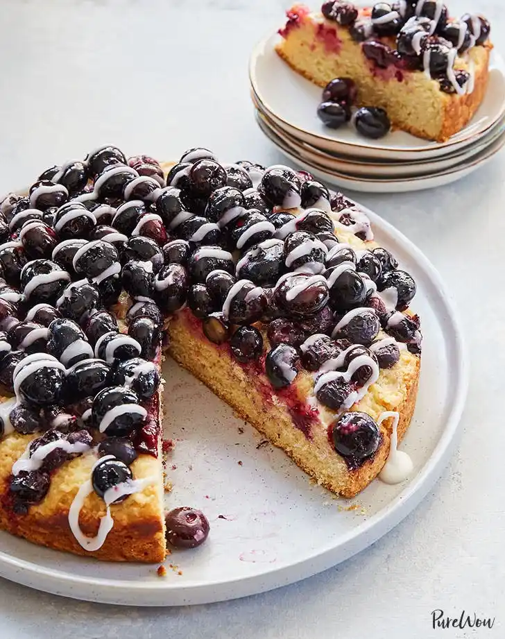

16 Types of cake and their recipes all Bakers should know.

Ingredients Required:
- 1 stick (8 tablespoons) unsalted butter, at room temperature
- 1/2 cup white sugar
- 2 large eggs
- Zest of 1 lemon
- 1/2 teaspoons pure vanilla extract
- 1/2 cup fine cornmeal
- 1 teaspoon baking powder
- 1/2 teaspoon fine sea salt
- 2/3 cups all-purpose flour, plus 2 tablespoons
- 1/2 cup plain Greek yogurt
- 2 cups blueberries
- 1 tablespoon lemon juice
- ICING:
- 1/2 cups powdered sugar
- 2 tablespoons fresh lemon juice
- 1 tablespoon heavy cream
- Directions:
- Preheat the oven to 350°F. Grease a 9-inch cake pan with nonstick spray.
- In the bowl of an electric mixer fitted with the paddle attachment, cream the butter and sugar until light and fluffy, about 5 minutes.
- Add the eggs one at a time, then beat in the lemon zest, mixing well to combine. Add the vanilla extract and mix to combine.
- Add the cornmeal, baking powder, salt and 2⅓ cups all-purpose flour; mix to combine. Add the yogurt and mix to combine.
- In a medium bowl, toss the blueberries with the lemon juice and the remaining 2 tablespoons flour.
- Pour the cake batter into the prepared pan and spread into an even layer. Scatter the blueberries in an even layer over the surface of the cake batter.
- Bake until a tester inserted into the center of the cake comes out clean, 45 to 55 minutes. Let cool for 15 minutes, then gently unmold from the cake pan and let cool completely on a wire rack.
- MAKE THE ICING: In a medium bowl, whisk together the powdered sugar, lemon juice and cream. When the cake has cooled, drizzle the icing all over the cake before serving.
Ingredients Required:
- 1 cup (227g) unsalted butter, at room temperature
- 1 1/2 cups (298g) granulated sugar
- 1 1/2 cups (284g) buttermilk
- 6 large (213g) egg whites
- 1 1/2 teaspoons pure vanilla extract
- 1 teaspoon almond extract
- 2 1/4 cups (271g) all-purpose flour
- 1 tablespoon baking powder
- 1 teaspoon fine sea salt
- FROSTING:
- 1 cup (227g) unsalted butter, at room temperature
- 4 cups (454g) powdered sugar
- 1 teaspoon pure vanilla extract
- 3/4 teaspoon almond extract
- 1/3 cup (81g) heavy cream
- Sprinkles, as needed
- Directions:
- Preheat the oven to 350°F. Grease and flour two 9-inch cake pans.
- MAKE THE CAKE: In the bowl of an electric mixer fitted with the paddle attachment, cream the butter and sugar together until light and fluffy, about 4 minutes.
- In a large liquid measuring cup, whisk the buttermilk, egg whites, vanilla, and almond extracts to combine. In a medium bowl, whisk the flour, baking powder and salt to combine.
- Add ⅓ of the flour mixture to the mixer and mix to combine. Add half of the buttermilk mixture and mix to combine. Scrape the bowl well.
- Repeat this process, alternating dry and wet ingredients until all ingredients are incorporated. Scrape the bowl well to ensure the batter is homogenous.
- Divide the batter evenly between the two prepared pans and smooth into an even layer. Bake until a toothpick inserted into the center comes out clean, 25 to 30 minutes.
- Cool in the pan for 20 minutes, then invert onto a wire rack to cool completely. Use a serrated knife to level off the surface of each cake to make a flat surface.
- MAKE THE FROSTING: In the bowl of an electric mixer, cream the butter and powdered sugar until light and fluffy, about 4 minutes. Add the vanilla and almond extracts and mix to combine.
- With the mixer running, add the cream in a slow, steady stream until well combined.
- Place one of the cake layers on a cake stand. Scoop about 1 cup of frosting onto the cake and spread into an even layer. Top with the second cake layer. Frost the cake all over, and garnish as desired with sprinkles.
Ingredients Required:
Ingredients Required:
Ingredients Required:
Ingredients Required:
Ingredients Required:
Ingredients Required:
Ingredients Required: